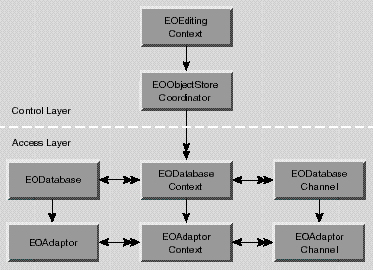

Inherits From:
NSObject
Conforms To: NSObject (NSObject)
Declared in: EOAccess/EOAdaptor.h
The EOAdaptor, EOAdaptorContext, and EOAdaptorChannel classes form the adaptor level of the Enterprise Objects Framework. An EOAdaptor can manage several EOAdaptorContexts, each of which represents a transaction scope on the database server. An EOAdaptorContext can in turn manage several EOAdaptorChannels, each of which handles actual access to the data on the server. An adaptor for a particular database may support a limited number of contexts per adaptor or channels per context, but an adaptor is guaranteed at least one of each.
Figure 1 The Adaptor Level Typically an application uses higher level objects such as an EOEditingContext and an EODatabaseContext that drive the adaptor level objects (Figure 2). Consequently, you don't usually have to interact with them. Each of the adaptor level classes have counterparts in the database level that use the adaptor level to interact with the database. In turn, classes in the control layer use database level classes to perform their operations.

Figure 2 The Adaptor Level and Higher Level Classes If your application includes an EOEditingContext as shown in Figure 2, the editing context creates its database level objects, and the database level objects create their own adaptor level objects. Once the network of objects is in place your code can interact with an object in the adaptor level, but it's rarely necessary. Most applications that explicitly message adaptor level objects do so to perform one of the following tasks:
Accessing An Editing Context's Adaptor Level Objects
To access an EOEditingContext's adaptor level objects, get the editing context's EOObjectStoreCoordinator from the editing context, an EODatabaseContext from the object store coordinator, and the adaptor level objects from there. The following code demonstrates the process.
EOEditingContext *editingContext; // Assume this exists.
NSString *myEntityName; // Assume this exists.
EOFetchSpecification *fspec;
EOObjectStoreCoordinator *rootStore;
EODatabaseContext *dbContext;
EOAdaptor *adaptor;
EOAdaptorContext *adContext;
fspec = [EOFetchSpecification fetchSpecificationWithEntityName:myEntityName
qualifier:nil
sortOrderings:nil];
rootStore = (EOCooperatingObjectStore *)[editingContext rootObjectStore];
dbContext = [rootStore objectStoreForFetchSpecification:fspec];
adaptor = [[dbContext database] adaptor];
adContext = [dbContext adaptorContext];
This example first creates a fetch specification, providing just the entity name as an argument. Of course, you can use a fetch specification that has non-nil values for all of its arguments, but only the entity name is used by the EOObjectStore objectStoreForFetchSpecification: method. Next, the example gets the editing context's EOObjectStoreCoordinator using the EOEditingContext method rootObjectStore. rootObjectStore returns an EOObjectStore and not an EOObjectStoreCoordinator, because it's possible to substitute a custom object store in place of an object store coordinator. Similarly, the EOObjectStoreCoordinator method objectStoreForFetchSpecification: returns an EOCooperatingObjectStore instead of an EODatabaseContext because it's possible to substitute a custom cooperating object store in place of a database context. If your code performs any such substitutions, you should alter the above code example to match your custom object store's API. See the class specifications for EOObjectStore, EOObjectStoreCoordinator, and EOCooperatingObjectStore for more information.
An EOEditingContext's EOObjectStoreCoordinator can have more than one set of database and adaptor level objects. Consequently, to get a database context from the object store coordinator, you have to provide information that the coordinator can use to choose the correct database context. The code example above provides an EOFetchSpecification using the method objectStoreForFetchSpecification:, but you could specify different criteria by using one of the following EOObjectStoreCoordinator methods instead:
cooperatingObjectStores
Creating Adaptor Level Objects and Connecting Them To The Server
Not all applications require higher level objects to drive the adaptor level. For example, you might bypass the database level and control layer entirely if you're writing an application, such as a report writer, that is concerned only with raw data and not with the methods that an enterprise object couples to that data. At the adaptor level, each database row is returned as a dictionary. An application that bypasses higher level database level and control layer objects must create its own adaptor level objects.
You normally create an adaptor with the method adaptorWithModel: , specifying an existing EOModel object (see the EOModel class specification for information on loading a model file). The model contains the name of the adaptor bundle it needs, and also contains database connection information so that an application can connect immediately without requiring the user to type a password. The connection information consists of all the values, such as user name and password, needed to connect to the database server. It's stored in a dictionary whose keys identify the information the server expects, and whose values are the values that the adaptor will try when connecting. Each adaptor uses different keys; see your adaptor's documentation for keys it uses.
A newly created adaptor has no adaptor contexts; to create a new context send your adaptor a createAdaptorContext message. An EOAdaptorContext retains its adaptor when created and an EOAdaptorChannel retains its context, so when you create a set of these objects, you need only retain the channel for all objects to remain valid.
You can create a connection dictionary and assign it to your adaptor with the setConnectionDictionary: method, or you can have the adaptor run a login panel to get the information from the user. When you ask an adaptor to validate its connection dictionary with the runLoginPanelAndValidateConnectionDictionary message, it briefly forms a connection to confirm that the server will accept the values entered by the user. An adaptor doesn't form a lasting connection to the database server until one of its channels receives an openChannel message.
The following code excerpt shows one way to set up a suite of adaptor objects, given a model that's already loaded:
EOModel *myModel; /* Assume this exists. */
EOAdaptor *myAdaptor;
EOAdaptorContext *myContext;
EOAdaptorChannel *myChannel;
myAdaptor = [EOAdaptor adaptorWithModel:myModel];
myContext = [myAdaptor createAdaptorContext];
myChannel = [[myContext createAdaptorChannel] retain];
NS_DURING
[myAdaptor assertConnectionDictionaryIsValid];
NS_HANDLER
if ([myAdaptor runLoginPanelAndValidateConnectionDictionary] == NO) {
/* Handle user canceling login panel... */
}
NS_ENDHANDLER
[myChannel openChannel];
The assertConnectionDictionaryIsValid invocation verifies that the adaptor has the information needed to log in to the server. This method raises an exception if it's unable to connect to the database server. Thus, it's invoked within an exception handling domain bracketed by NS_DURING and NS_HANDLER macros (see the NSException class specification for information on handling exceptions). If the connection dictionary contains invalid information (for example, it's common to leave the user name and password unspecified in the model file), assertConnectionDictionaryIsValid raises an exception. As a result, the local exception handler (bracketed by NS_HANDLER and NS_ENDHANDLER macros) invokes runLoginPanelAndValidateConnectionDictionary to allow the user to enter the necessary connection information. The invocation of openChannel at the end of the excerpt causes the application to form a connection to the database.
Creating an EOAdaptor Subclass
Enterprise Objects Framework provides concrete adaptors for three standard relational database management systems-Informix, Oracle, and Sybase-as well as a concrete adaptor for ODBC-compliant databases. You may want to create a subclass of one of these adaptors to extend its behavior, or you may want to create a concrete EOAdaptor subclass for a different database or persistent storage system. EOAdaptor provides many default method implementations that are sufficient for concrete subclasses:
The following methods establish structure and conventions that other Enterprise Objects Framework classes depend on and should be overridden with caution:
If you override any of the above methods, your implementations should incorporate the superclass's implementation through a message to super .
The remaining EOAdaptor methods must be overridden by concrete adaptor subclasses in terms of the persistent storage system with which it interacts:
adaptorWithModel:(EOModel *)model Creates and returns a new adaptor by extracting the adaptor name from model, sending adaptorWithName: to self , and assigning model's connection dictionary to the new adaptor. Raises an NSInvalidArgumentException if model is nil, if model's adaptor name is nil , or if the adaptor named in model can't be loaded.
A subclass of EOAdaptor doesn't need to override this method. A subclass that does override this method must incorporate the superclass's version through a message to super .
See also: - adaptorName (EOModel), - setConnectionDictionary:
adaptorWithName:
+ (id)adaptorWithName:(NSString *)name
Creates and returns a new adaptor, loading it from the framework named name if necessary and sending it an initWithName: message. For example, this code excerpt creates an adaptor from a framework named AcmeEOAdaptor.framework :
EOAdaptor *myAdaptor = [EOAdaptor adaptorWithName:@"Acme"];
This method searches the application's main bundle, ~/Library/Frameworks , LocalLibrary/Frameworks , and NextLibrary/Frameworks for the first framework whose base filename (that is, the filename without the ".framework" extension) corresponds to name. However, note that dynamic loading isn't available on PDO platforms. Consequently, you must statically link your adaptor into applications for PDO: In this case, adaptorWithName: simply looks in the runtime for an adaptor class corresponding with the specified name. Raises an NSInvalidArgumentException if name is nil or if an adaptor class corresponding with name can't be found.
Usually you'd use adaptorWithModel: to create a new adaptor, but you can use this method when you don't have a model. In fact, this method is typically used when you're creating an adaptor for the purpose of creating a model from an existing database.
A subclass of EOAdaptor doesn't need to override this method. A subclass that does override this method must incorporate the superclass's version through a message to super .
assignExternalInfoForAttribute:
+ (void)assignExternalInfoForAttribute:(EOAttribute *)attribute
Overridden by adaptor subclasses to assign database-specific characteristics to attribute. EOAdaptor's implementation invokes assignExternalTypeForAttribute: to assign an external type and then assigns a column name based on the attribute name. For example, assignExternalInfoForAttribute: assigns the column name "FIRST_NAME" to an attribute named "firstName". The method makes no changes to attribute's column name if attribute is derived.
See also: + assignExternalInfoForEntireModel:
assignExternalInfoForEntireModel:
+ (void)assignExternalInfoForEntireModel:(EOModel *)model
Assigns database-specific characteristics to model. Used in EOModeler to switch a model's adaptor. This method examines each entity in model. If an entity's external name is not set and all of the entity's attribute's external names are not set, then this method uses assignExternalInfoForEntity: and assignExternalInfoForAttribute: to assign external names. If the entity's external name is set or if any of the entity's attributes' external names are set, then the method doesn't assign external names to the entity or any of its attributes. Regardless, this method invokes assignExternalTypeForAttribute: for each attribute in the model to assign external types.
A subclass of EOAdaptor doesn't need to override this method.
assignExternalInfoForEntity:
+ (void)assignExternalInfoForEntity:(EOEntity *)entity
Overridden by adaptor subclasses to assign database-specific characteristics to entity. EOAdaptor's implementation assigns an external name to entity based on entity's name. For example, assignExternalInfoForEntity: assigns the external name "MOVIE" to an entity named "Movie". An adaptor subclass should override this method to assign additional database-specific characteristics, if any.
See also: + assignExternalInfoForEntireModel:
assignExternalTypeForAttribute:
+ (void)assignExternalTypeForAttribute: (EOAttribute *)attribute
Overridden by adaptor subclasses to assign the external type to attribute. EOAdaptor's implementation does nothing. A subclass of EOAdaptor should override this method to assign an external type using attribute's internal type, precision, and length information.
See also: + assignExternalInfoForEntireModel:
availableAdaptorNames
+ (NSArray *)availableAdaptorNames
Returns an array containing the names of all available adaptors, as found by searching the paths returned by NSStandardLibraryPaths() . If no adaptors are found, this method returns an empty array.
externalTypesWithModel:
+ (NSArray *)externalTypesWithModel:(EOModel *)model
Implemented by subclasses to return the names of the database types (such as Sybase "varchar" or Oracle "NUMBER") for use with this adaptor. model is an optional argument that can be used to supplement the adaptor's set of database types with additional, user-defined database types. See your adaptor's documentation for information on if and how it uses model.
An adaptor subclass should override this method without invoking EOAdaptor's implementation.
internalTypeForExternalType:model:
+ (NSString *)internalTypeForExternalType:(NSString *)extType model:(EOModel *)model
Implemented by subclasses to return the name of the Objective-C class used to represent values stored in the database as extType. model is an optional argument that can be used to supplement the adaptor's set of type mappings with additional mappings for user-defined database types. See your adaptor's documentation for information on if and how it uses model. Returns nil if no mapping for extType is found.
An adaptor subclass should override this method without invoking EOAdaptor's implementation.
setExpressionClassName:adaptorClassName:
+ (void)setExpressionClassName:(NSString *)sqlExpressionClassName adaptorClassName:(NSString *)adaptorClassName
Sets the expression class for instances of the class named adaptorClassName to sqlExpressionClassName. If sqlExpressionClassName is nil , restores the expression class to the default. Raises an NSInvalidArgumentException if adaptorClassName is nil or the empty string.
Use this method to substitute a subclass of EOSQLExpression for the expression class provided by the adaptor. For example, the default expression class for the Oracle adaptor is OracleSQLExpression. The following statement substitutes the class named MySQLExpression:
[EOAdaptor setExpressionClassName:@"MySQLExpression" adaptorClassName:@"Oracle"];
A subclass of EOAdaptor doesn't need to override this method. A subclass that does override this method must incorporate the superclass's version through a message to super .
See also: - defaultExpressionClass
sharedLoginPanelInstance
+ (EOLoginPanel *)sharedLoginPanelInstance
Returns the receiver's login panel in applications that have a graphical user interface. Returns nil if the application doesn't have an NSApplication object. Otherwise, looks for the bundle named "LoginPanel" in the resources for the adaptor framework, loads the bundle, and returns an instance of the bundle's principal class (see the NSBundle class specification for information on loading bundles). The returned object is used to implement runLoginPanelAndValidateConnectionDictionary and runLoginPanel .
A subclass of EOAdaptor doesn't need to override this method. A subclass that does override this method must incorporate the superclass's version through a message to super .
assertConnectionDictionaryIsValid Implemented by subclasses to verify that the adaptor can connect to the database server with its connection dictionary. Briefly forms a connection to the server to validate the connection dictionary and then closes the connection. Raises an EOGeneralAdaptorException if the connection dictionary contains invalid information.
An adaptor subclass must override this method without invoking EOAdaptor's implementation.
See also: - setConnectionDictionary: , - runLoginPanel , - runLoginPanelAndValidateConnectionDictionary
canServiceModel:
- (BOOL)canServiceModel:(EOModel *)model
Returns YES if the receiver can service model, NO otherwise. EOAdaptor's implementation returns YES if the receiver's connection dictionary is equal to model's connection dictionary as determined by NSDictionary's isEqual: method.
A subclass of EOAdaptor doesn't need to override this method.
connectionDictionary
- (NSDictionary *)connectionDictionary
Returns the receiver's connection dictionary, or nil if the adaptor doesn't have one. The connection dictionary contains the values, such as user name and password, needed to connect to the database server. The dictionary's keys identify the information the server expects, and its values are the values that the adaptor will try when connecting. Each adaptor uses different keys; see your adaptor's documentation for keys it uses.
A subclass of EOAdaptor doesn't need to override this method.
See also: - setConnectionDictionary:
contexts
- (NSArray *)contexts
Returns the adaptor contexts created by the receiver, or nil if no adaptor contexts have been created. A subclass of EOAdaptor doesn't need to override this method.
See also: - createAdaptorContext
createAdaptorContext
- (EOAdaptorContext *)createAdaptorContext
Implemented by subclasses to create and return a new EOAdaptorContext, or nil if a new context can't be created.The new context retains the receiver. A newly created EOAdaptor has no contexts.
An adaptor subclass must override this method without invoking EOAdaptor's implementation.
See also: - contexts , - initWithAdaptor: (EOAdaptorContext)
databaseEncoding
- (NSStringEncoding)databaseEncoding
Returns the string encoding used to encode and decode database strings. An adaptor's database encoding is stored in the connection dictionary with the key "databaseEncoding". If the connection dictionary doesn't have an entry for the database encoding, the default C string encoding is used. This method raises an NSInvalidArgumentException if the receiver's database encoding isn't valid.
A database system stores strings in a particular character set. The Framework needs to know what character set the database system uses so it can encode and decode strings coming from and going to the database server. The string encoding returned from this method specifies the character set the Framework uses.
A subclass of EOAdaptor doesn't need to override this method.
See also: - availableStringEncodings (NSString), - defaultCStringEncoding (NSString)
defaultExpressionClass
- (Class)defaultExpressionClass
Implemented by subclasses to return the subclass of EOSQLExpression used as the default expression class for the adaptor. You wouldn't ordinarily invoke this method directly. It's invoked automatically to determine which class should be used to represent query language expressions.
An adaptor subclass must override this method without invoking EOAdaptor's implementation.
See also: + setExpressionClassName:adaptorClassName:
Returns the receiver's delegate or nil if a delegate has not been assigned. A subclass of EOAdaptor doesn't need to override this method.
See also: - setDelegate:
expressionClass
- (Class)expressionClass
Returns the subclass of EOSQLExpression used by the receiver for query language expressions. Returns the expression class assigned using the class method setExpressionClassName:adaptorClassName: . If no class has been set for the receiver's class, this method determines the expression class by sending defaultExpressionClass to self .
You wouldn't ordinarily invoke this method directly. It's invoked automatically to determine which class should be used to represent query language expressions.
A subclass of EOAdaptor doesn't need to override this method. A subclass that does override this method must incorporate the superclass's version through a message to super .
fetchedValueForDataValue:attribute:
- (NSData *)fetchedValueForDataValue: (NSData *)value attribute: (EOAttribute *)attribute
Overridden by subclasses to return the value that the receiver's database server would ultimately store for value if it was inserted or updated in the column described by attribute. This method is invoked from fetchedValueForValue:attribute: when the value argument is an NSData.
EOAdaptor's implementation returns value unchanged. An adaptor subclass should override this method if the adaptor's database performs transformations on binary types, such as BLOBs.
fetchedValueForDateValue:attribute:
- (NSCalendarDate *)fetchedValueForDateValue: (NSCalendarDate *)value
attribute: (EOAttribute *)attribute
Overridden by subclasses to return the value that the receiver's database server would ultimately store for value if it was inserted or updated in the column described by attribute. This method is invoked from fetchedValueForValue:attribute: when the value argument is a date.
EOAdaptor's implementation returns value unchanged. An adaptor subclass should override this method to convert or format date values. For example, a concrete adaptor subclass could set value's millisecond value to 0.
fetchedValueForNumberValue:attribute:
- (NSNumber *)fetchedValueForNumberValue: (NSNumber *)value
attribute: (EOAttribute *)attribute
Overridden by subclasses to return the value that the receiver's database server would ultimately store for value if it was inserted or updated in the column described by attribute. This method is invoked from fetchedValueForValue:attribute: when the value argument is a number.
EOAdaptor's implementation returns value unchanged. An adaptor subclass should override this method to convert or format numeric values. For example, a concrete adaptor subclass should probably round value according to the precision and scale attribute.
fetchedValueForStringValue:attribute:
- (NSString*)fetchedValueForStringValue: (NSString *)value attribute: (EOAttribute *)attribute
Overridden by subclasses to return the value that the receiver's database server would ultimately store for value if it was inserted or updated in the column described by attribute. This method is invoked from fetchedValueForValue:attribute: when the value argument is a string.
EOAdaptor's implementation trims trailing spaces and returns nil for zero-length strings. An adaptor subclass should override this method to perform any additional conversion or formatting on string values. For example, a concrete adaptor subclass could trim trailing spaces.
fetchedValueForValue:attribute:
- (id)fetchedValueForValue: (id)value attribute: (EOAttribute *)attribute
Returns the value that the receiver's database server would ultimately store for value if it was inserted or updated in the column described by attribute. The Framework uses this method to keep enterprise object snapshots in sync with database values. For example, assume that a product's price is marked down 15%. If the product's original price is 5.25, the sale price is 5.25*.85, or 4.4625. When the Framework updates the product's price, the database server truncates the price to 4.46 (assuming the scale of the database's price column is 2). Before performing the update, the Framework sends the adaptor a fetchedValueForValue:attribute: message with the value 4.4625. The adaptor performs the database-specific transformation and returns 4.46. The Framework assigns the truncated value to the product object and to the product object's snapshot and then proceeds with the update.
An adaptor subclass can override this method or one of the data type-specific fetchedValue... methods. EOAdaptor's implementation of fetchedValueForValue:attribute: invokes one of the data type-specific methods depending on value's class. If value is not a string, number, date, or data object (that is, an instance of NSString, NSNumber, NSDate, NSData, or any of their subclasses), fetchedValueForValue:attribute: returns value unchanged.
This method invokes the delegate method adaptor:fetchedValueForValue:attribute: which can override the adaptor's default behavior.
See also:
- fetchedValueForDataValue:attribute: , - fetchedValueForDateValue:attribute: ,
- fetchedValueForNumberValue:attribute: , - fetchedValueForStringValue:attribute: ,
- valueFactoryMethod (EOAttribute)
hasOpenChannels
- (BOOL)hasOpenChannels
Returns YES if any of the receiver's contexts have open channels, NO otherwise. A subclass of EOAdaptor doesn't need to override this method.
See also:
- hasOpenChannels (EOAdaptorContext)
initWithName:
- (id)initWithName:(NSString *)name
The designated initializer for the EOAdaptor class, this method is overridden by adaptor subclasses to initialize a newly allocated EOAdaptor subclass with name. name is usually derived from the base filename (that is, the filename without the ".framework" extension) of the framework from which the adaptor is loaded. For example, an adaptor named "Acme" is loaded from the framework AcmeEOAdaptor.framework . Returns self .
Never invoke this method directly. It is invoked automatically from adaptorWithName: and adaptorWithModel: -EOAdaptor class methods you use to create a new adaptor.
A subclass of EOAdaptor doesn't need to override this method, but may override it to perform additional initialization. A subclass that does override this method must incorporate the superclass's version through a message to super .
isValidQualifierType:model:
- (BOOL)isValidQualifierType:(NSString *)typeName model:(EOModel *)model
Implemented by subclasses to return YES if an attribute of type typeName can be used in a qualifier (a SQL WHERE clause) sent to the database server, or NO otherwise. typeName is the name of a type as required by the database server, such as Sybase "varchar" or Oracle "NUMBER". model is an optional argument that can be used to supplement the adaptor's set of type mappings with additional mappings for user-defined database types. See your adaptor's documentation for information on if and how it uses model.
An adaptor subclass must override this method without invoking EOAdaptor's implementation.
Returns the adaptor's name; this is usually the base filename of the framework from which the adaptor was loaded. For example, if an adaptor was loaded from a framework named AcmeEOAdaptor.framework , this method returns "Acme".
A subclass of EOAdaptor doesn't need to override this method.
See also: + adaptorWithName: , - initWithName:
runLoginPanel
- (NSDictionary *)runLoginPanel
Runs the adaptor's login panel by sending a runPanelForAdaptor:validate: message to the adaptor's login panel object with the validate flag NO. Returns connection information entered in the panel without affecting the adaptor's connection dictionary. The connection dictionary returned isn't validated by this method.
A subclass of EOAdaptor doesn't need to override this method. A subclass that does override this method must incorporate the superclass's version through a message to super .
See also: - runLoginPanelAndValidateConnectionDictionary , - setConnectionDictionary: , - assertConnectionDictionaryIsValid , + sharedLoginPanelInstance
runLoginPanelAndValidateConnectionDictionary
- (BOOL)runLoginPanelAndValidateConnectionDictionary
Runs the adaptor's login panel by sending a runPanelForAdaptor:validate: message to the adaptor's login panel object with the validate flag YES. Returns YES if the user enters valid connection information, or NO if the user cancels the panel.
A subclass of EOAdaptor doesn't need to override this method. A subclass that does override this method must incorporate the superclass's version through a message to super .
See also: - runLoginPanel , - setConnectionDictionary: , - assertConnectionDictionaryIsValid , + sharedLoginPanelInstance
setConnectionDictionary:
- (void)setConnectionDictionary:(NSDictionary *)dictionary
Sets the adaptor's connection dictionary to dictionary, which must only contain NSString, NSData, NSDictionary, and NSArray objects. Raises an NSInvalidArgumentException if there are any open channels-you can't change connection information while the adaptor is connected.
A subclass of EOAdaptor doesn't need to override this method. A subclass that does override this method must incorporate the superclass's version through a message to super .
See also:
- connectionDictionary , - hasOpenChannels , - assertConnectionDictionaryIsValid ,
- runLoginPanelAndValidateConnectionDictionary ,
- runPanelForAdaptor:validate: (EOLoginPanel)
setDelegate:
- (void)setDelegate:(id)delegate
Sets the receiver's delegate to delegate, or removes its delegate if delegate is nil . The receiver does not retain delegate. A subclass of EOAdaptor doesn't need to override this method. A subclass that does override this method must incorporate the superclass's version through a message to super .
See also: - delegate
Methods Implemented By the Delegate
adaptor:fetchedValueForValue:attribute:
- (id)adaptor: (EOAdaptor *)adaptor
fetchedValueForValue: (id)value
attribute: (EOAttribute *)attribute
Invoked from fetchedValueForValue:attribute: to allow the delegate to perform a database-specific transformation on value. The delegate should return the value that the adaptor's database server would ultimately store for value if it was inserted or updated in the column described by attribute.
Ordinarily, fetchedValueForValue:attribute: invokes one of the type-specific fetchedValue... methods depending on the type of value. If you implement this delegate method, fetchedValueForValue:attribute: does not invoke the other fetchedValue... methods. It simply invokes your delegate method and returns the value returned from it. Therefore, an implementation of adaptor:fetchedValueForValue:attribute: must handle values of all types.
Copyright © 1997, Apple Computer, Inc. All rights reserved.